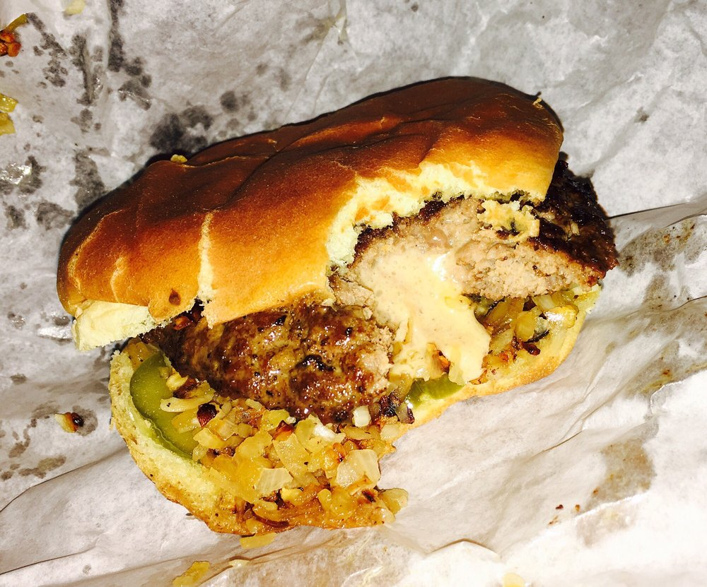
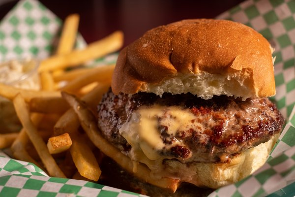

Search Results
Matt's Bar
4/5 stars. “One of my favorite burger places in Minneapolis, and the (supposedly) creator of the Jucy Lucy.” Address: 3500 Cedar Ave S, Minneapolis, MN 55407 Hours: Mon 11:00 am - 12:00 am
5-8 Club
3.5/5 stars. "Here's the deal. I used to hang out at Sports Page in the early 1980's. Why? Great cheeseburgers! Granted, they only served 3.2 beer back then, but who cares, it's the cheeseburgers that draw! I was on my way to MSP Airport last…"” Address: 5800 Cedar Ave, Minneapolis, MN 55417 Hours: Mon 11:00 am - 10:00 pm
